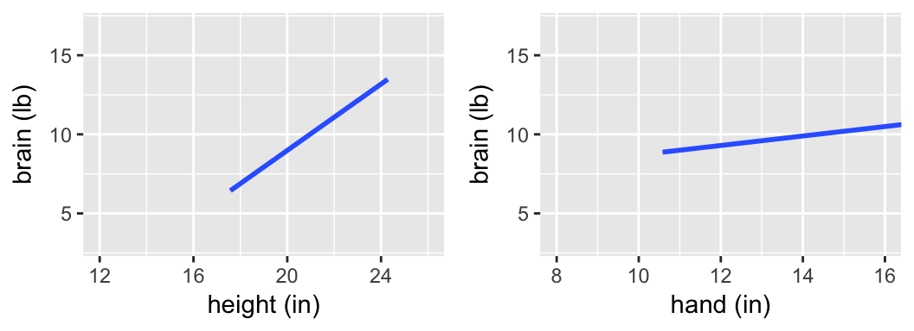

4.6 Day 4a: Hypothesis Testing
Getting started:
As you settle in, start a new Rmd and load the following packages at the top.
```{r warning = FALSE, message = FALSE}
library(ggplot2)
library(dplyr)
library(infer)
library(broom)
library(mosaic)
```
Today’s plan:
Discuss Day 3 homework & tie up any other loose ends
Hypothesis testing
More advanced visualization techniques
4.6.1 Warm-up
Conditional Probabilities
What’s the relationship between each of the following pairs of unconditional (\(P(A)\)) & conditional (\(P(A|B)\)) probabilities?
\[\begin{array}{lcl} P(\text{lung cancer}) & \hspace{.4in} & P(\text{lung cancer} \; | \; \text{smoke}) \\ P(\text{eat at McD's}) & & P(\text{eat at McD's} \; | \; \text{vegan}) \\ P(\text{Queen of Hearts} | \text{Hearts}) & & P(\text{Hearts} \; | \; \text{Queen of Hearts}) \\ \end{array}\]
Exploratory analysis vs inference
Recall the difference between exploratory and inferential questions:
- Exploratory question
What trends did we observe in our sample of data? - Inferential question
Given the potential error in this sample information, what can we conclude about the trends in the broader population? To this end, we can calculate standard errors, construct confidence intervals, and conduct hypothesis tests.
Regression Models (Thus Far)
\[\begin{array}{ll} \text{population model:} & y = X \beta + \varepsilon \;\; \text{ where } \varepsilon \sim N(0,\sigma^2) \\ & y \text{ is an $n \times 1$ vector of responses} \\ & X \text{ is an $n \times (k+1)$ matrix of predictors} \\ & \beta \text{ is a $k \times 1$ vector of coefficients} \\ & \varepsilon \text{ is an $n \times 1$ vector of residuals} \\ & \\ \text{sample estimate of $\beta$}: & \hat{\beta} = (X^TX)^{-1}X^Ty \\ \text{standard error of $\hat{\beta}$:} & s.e.(\hat{\beta}) = \sqrt{\sigma^2(X^TX)^{-1}} \\ & \\ \text{prediction of $y$ at $x$:} & \hat{y} = x^T \hat{\beta} \\ \text{s.e. for a prediction of trend at $x$:} & s.e.(\hat{y}) = \sqrt{\sigma^2 x^T (X^TX)^{-1} x} \\ \text{s.e. for a prediction of individual case at $x$:} & s.e.(\hat{y}) = \sqrt{\sigma^2(1 + x^T (X^TX)^{-1} x)} \\ & \\ \text{Approximately:} & \hat{\beta}_i \stackrel{\cdot}{\sim} N(\beta_i, (s.e.(\hat{\beta}_i)^2) \\ & \hat{y} \stackrel{\cdot}{\sim} N(y, (s.e.(\hat{y}))^2) \\ \end{array}\]
EXAMPLE
Let’s do some inference. Extraterrestrials have landed and scientists are busy studying their physical characteristics (put aside your ethics for now). Ignore everything you know about humans - ETs are different.
Examine the following plots of the relationship between the ETs “brain” weight, “hand” length, and height that were calculated from a sample of ETs.
Is there a “significant” relationship between brain weight & height? What about between brain weight & hand length?

Those were trick questions - we can’t assess the significance of a relationship without an understanding of the potential error in our sample model. The following output includes the observed sample data for 7 ETs, the estimated model calculated from these 7 ETs, confidence bands that reflect the potential error in the estimated model trend, & CIs for the slope coefficients.
Is there a “significant” relationship between brain weight & height? What about between brain weight & hand length?
confint(mod_height)
## 2.5 % 97.5 %
## (Intercept) -39.6174 15.601
## height -0.2714 2.371
confint(mod_hand)
## 2.5 % 97.5 %
## (Intercept) -29.622 41.031
## hand -2.255 2.854
More ETs have landed! There are 25 now.
Is there a “significant” relationship between brain weight & height? What about between brain weight & hand length?

confint(mod_height)
## 2.5 % 97.5 %
## (Intercept) -6.6081 0.7504
## height 0.4633 0.8190
confint(mod_hand)
## 2.5 % 97.5 %
## (Intercept) -4.195 13.176
## hand -0.246 1.136
More ETs have landed! There are 500 in total.
Is there a “significant” relationship between brain weight & height? What about between brain weight & hand length?
confint(mod_height)
## 2.5 % 97.5 %
## (Intercept) -4.715 -3.0658
## height 0.659 0.7385
confint(mod_hand)
## 2.5 % 97.5 %
## (Intercept) 4.4557 7.9347
## hand 0.1881 0.4512
4.6.2 Warning
We answered the above inferential questions using CIs alone. CIs are great - they both give us a sense for a potential magnitude of the effect we’re estimating as well as whether the effect is significant. Unfortunately, many people mistakenly emphasize the importance of the latter over the former. This leads to bad practices:
Let’s keep this in mind as we explore hypothesis testing so that we don’t make the same mistakes.
4.6.3 Hypothesis testing concepts
Let’s switch gears to human subjects. Early explorations of the relationship between human brain size and IQ were plagued by crude measurements (weighing brains after death). Willeman et al. developed a study that would use magnetic resonance imaging (MRI) to measure brain size. The MRI scans consisted of 18 horizontal MR images that were 5 mm thick and 2.5 mm apart. Further, each image covered a 256 x 256 pixel area. Any pixel with a non-zero gray scale was considered to be “part of the brain”.

4.6.3.1 Step 1: Set up the hypotheses
First, we’ll consider the relationship between brain size (\(y\)) and height (\(x\)):
\[y = \beta_0 + \beta_1 x + \varepsilon\]
Researchers had a hypothesis: taller people tend to have bigger brains. We can formalize this hypothesis and connect it to our model parameters.
\(H_0\): Null Hypothesis
Status quo hypothesis. Typically represents no effect.\(H_a:\) Alternative Hypothesis
Claim being made about the population.NOTE
In a statistical hypothesis test, we assume “innocent until proven guilty.” That is, assume \(H_0\) is true and put the burden of proof on \(H_a\).
What are \(H_0\) and \(H_a\) in our example?
4.6.3.2 Step 2: Compare sample results to \(H_0\)
To evaluate their hypothesis, Willeman et al. collected the following data on 38 subjects:
| Variable | Description |
|---|---|
MRICount |
total pixel count of non-zero gray scale in 18 MRI scans (the larger the count, the larger the brain!) |
Height |
subject’s height in inches |
VIQ |
verbal IQ score |
# Load data
brain <- read.csv("https://www.macalester.edu/~ajohns24/data/BrainEESEE.csv")
# Fit sample model
brain_mod_1 <- lm(MRICount ~ Height, data=brain)
coef(summary(brain_mod_1))
## Estimate Std. Error t value Pr(>|t|)
## (Intercept) 175332 167806 1.045 0.3030573
## Height 10690 2448 4.366 0.0001023# Plot sample model
ggplot(brain, aes(x=Height, y=MRICount)) +
geom_point() +
geom_smooth(method="lm")
Quick review:
# CIs of model coefficients
confint(brain_mod_1, level=0.95)
## 2.5 % 97.5 %
## (Intercept) -164994 515658
## Height 5724 15656
# CIs of average brain size among all 72 inch people
predict(brain_mod_1, newdata=data.frame(Height=72), interval="confidence", level=0.95)
## fit lwr upr
## 1 945013 918578 971448
# CI of brain size for Jo, a specific 72 inch person
predict(brain_mod_1, newdata=data.frame(Height=72), interval="prediction", level=0.95)
## fit lwr upr
## 1 945013 821516 1068510
How consistent is our sample with \(H_0\), ie. no association between brain size and height? Let’s conduct an experiment & simulation!
- Class shuffle
You’ve each been given theMRICountandHeightfor 1-2 cases in our sample of 38 subjects.Tear your paper into 2 pieces, separating the
MRICountvalue from theHeightvalue. Hand yourHeightto the person on your left.If we re-plotted these data, what do you think we’d see? Would the patterns reflect \(H_0: \; \beta_1 = 0\) or \(H_a: \; \beta_1 > 0\)?
We can simulate this experiment in RStudio by reshuffling the
Heightvalues:# Shuffle the brain size y shuffled_brain <- brain %>% mutate(MRICount = sample(MRICount, size = 38, replace = FALSE)) # Compare the first 2 rows of original and shuffled data head(brain, 2) head(shuffled_brain, 2) # Plot the shuffled data ggplot(shuffled_brain, aes(x = Height, y = MRICount)) + geom_point() + geom_smooth(method = "lm", se = FALSE) + geom_abline(intercept = 175332, slope = 10690, color = "red", size = 1.5)Repeat! Pass your
Heightdata to the person on your left.
Repeated shuffling
Simulate 100 sets of sample data we’d expect if \(H_0\) were true
set.seed(2000) # Get 100 shuffled samples of size 38 shuffles <- rep_sample_n(___) %>% mutate(___)
Examine sample models we’d expect if \(H_0\) were true
Plot the model ofMRICountbyHeightfor each of the 100 shuffled samples. FIRST: What do you anticipate these will look like?ggplot(___, aes(___)) + geom_smooth(method = "lm", se = FALSE) + geom_abline(intercept = 175332, slope = 10690, color = "red", size = 1.5)
Examine the sampling distribution of sample slopes assuming \(H_0\) were true
Store and plot the slopes from the 100 shuffled sample models. FIRST: What do you anticipate these will look like?slopes <- shuffles %>% group_by(___) %>% do(___) %>% filter(___) ggplot(slopes, aes(___)) + geom_histogram(color = "white", binwidth = 1500) + lims(x = c(-12000, 12000)) + geom_vline(xintercept = 10690, color = "red", size = 1.5)
Compare OUR sample results to those we’d expect IF \(H_0\) were true
Is our sample slope compatible with \(H_0\)? How can you quantify this assessment?
Test Statistic
A one-number summary calculated from the sample data that measures the compatibility of the data with \(H_0\).
Connecting to
lm()output
For the brain hypotheses, the reported test statistic is4.366(thet value). How was this calculated & how do we interpret it?coef(summary(brain_mod_1)) ## Estimate Std. Error t value Pr(>|t|) ## (Intercept) 175332 167806 1.045 0.3030573 ## Height 10690 2448 4.366 0.0001023It might help to reexamine the sampling distribution of slopes we’d expect to observe if \(H_0\) were true (left) and the standardized theoretical version (from the Central Limit Theorem, not simulation):
p-value
Test statistics and their interpretations vary from setting to setting, test to test. The p-value provides a universal summary of the compatibility of our data with \(H_0\). It is the probability of observing a test statistic as or more extreme than ours (relative to \(H_a\)) if \(H_0\) were indeed true:\[\text{p-value } = P\left(\text{test statistic } \; | \; H_0 \right)\]
Common Misconception
The p-value measures the compatibility of our data with \(H_0\), not the compatibility of \(H_0\) with our data. Thus the p-value cannot be interpreted as the probability that \(H_0\) is true:\[\text{p-value } = P\left(\text{test statistic } \; | \; H_0 \right) \ne P\left(H_0 \; | \; \text{ test statistic}\right)\]
- p-values
- Reexamine the sampling distribution of slopes we’d expect to observe if \(H_0\) were true. Based on either of these pictures alone, approximate the p-value.

In fact, for our hypothesis test \[\text{p-value} = 0.000051\] Interpret this p-value and identify how this p-value for our “one-sided” test was calculated from the “two-sided” p-value provided in RStudio.
summary(brain_mod_1) ## ## Call: ## lm(formula = MRICount ~ Height, data = brain) ## ## Residuals: ## Min 1Q Median 3Q Max ## -103641 -44146 -12740 40782 155916 ## ## Coefficients: ## Estimate Std. Error t value Pr(>|t|) ## (Intercept) 175332 167806 1.04 3e-01 ## Height 10690 2448 4.37 1e-04 *** ## --- ## Signif. codes: 0 '***' 0.001 '**' 0.01 '*' 0.05 '.' 0.1 ' ' 1 ## ## Residual standard error: 59500 on 36 degrees of freedom ## Multiple R-squared: 0.346, Adjusted R-squared: 0.328 ## F-statistic: 19.1 on 1 and 36 DF, p-value: 0.000102How is the p-value reported in the model summary table calculated (using theory, not simulation)?! By the Normal CLT, or more accurately, the “t” distribution:
pnorm(10690, mean = 0, sd = 2448, lower = FALSE) * 2 ## [1] 1.261e-05 pnorm(4.37, lower = FALSE) * 2 ## [1] 1.242e-05 pt(4.37, df = 36, lower = FALSE) * 2 ## [1] 0.0001011
- Based on this p-value, what would your conclusion be - is there significant evidence of an association between height and brain size?!
- Reexamine the sampling distribution of slopes we’d expect to observe if \(H_0\) were true. Based on either of these pictures alone, approximate the p-value.
Interpreting p-value
The smaller the p-value, the more evidence we have against \(H_0\):
- Small p-value:
Data like ours would be uncommon if \(H_0\) were indeed true, i.e. our data are not compatible with \(H_0\).
- Large p-value:
Data like ours would be typical if \(H_0\) were indeed true, i.e. our data are compatible with \(H_0\).
4.6.3.3 Step 3: Form a conclusion
Forming a conclusion is a nuanced process - it should not be seen as a black-and-white decision.
To BEGIN
To get a sense of scale, people often compare the p-value to a chosen significance level (typically 0.05) to determine whether our data provide sufficient evidence against \(H_0\).
p-value \(< 0.05\)
Results are statistically significant at the 0.05 level. (Reject \(H_0\) in favor of \(H_a\).)p-value \(\ge 0.05\)
Results are not statistically significant at the 0.05 level. (Fail to reject \(H_0\).)
To FOLLOW UP
The above guidance is nice, but alone it produces an incomplete conclusion. p-values MUST be supplemented with information about the magnitude of the sample estimate and its corresponding standard error.
Conclusion
In light of the p-value = 0.000102/2 = 0.000051 for our brain hypotheses\[\begin{split} H_0: & \beta = 0 \\ H_a: & \beta > 0 \\ \end{split} \]
what would your conclusion be?
Hypothesis Testing Framework
It’s impossible (and repetitive) to cover every type of hypothesis test. Rather, we’ll focus on the foundations of hypothesis testing that transfer to every hypothesis test. Though goals vary from test to test, all hypothesis tests share a common structure:
- Set up hypotheses
- \(H_0\): Null Hypothesis
Status quo hypothesis. Typically represents no effect.
- \(H_a:\) Alternative Hypothesis
Claim being made about the population parameter.
NOTE: In a statistical hypothesis test, we assume “innocent until proven guilty.” That is, assume \(H_0\) is true and put the burden of proof on \(H_a\).
- Compare our sample results to the null hypothesis
- A test statistic is a one-number summary of the data that we use to assess \(H_0\). This number is a quick measure of the compatibility of the data with \(H_0\).
- A p-value is the probability of observing a test statistic as or more extreme than ours if \(H_0\) were indeed true: \(\text{p-value} = P(\text{test statistic } \; | \; H_0)\)
- Make some sort of recommendation / conclusion
- Examine the effect size - is it meaningful?
Examine the p-value. The smaller the p-value, the more evidence we have against \(H_0\):
- Small p-value \(\Rightarrow\) our data are not compatible with \(H_0\).
- Large p-value \(\Rightarrow\) our data are compatible with \(H_0\).
4.6.4 Hypothesis Testing Practice
Let’s apply & extend these ideas in a new context.
A simple model of
wagebymarried
Consider the following population model of a person’s wage by their marital status: \[\text{wage} = \beta_0 + \beta_1 \text{marriedSingle} + \varepsilon\] where the population coefficients \(\beta_i\) are unknown. Let’s test the following hypotheses about themarriedSinglecoefficient: \[\begin{split} H_0: & \;\; \beta_1 = 0 \\ H_a: & \;\; \beta_1 < 0 \\ \end{split} \]- Interpret \(H_0\) and \(H_a\).
- On a separate paper, sketch the sampling distribution of the sample estimates \(\hat{\beta}_1\) that we would expect to see if \(H_0\) were true (i.e. if \(\beta_1=0\)). NOTE: Focus on the shape and center. We’ll take care of the spread next.
Let’s test these hypotheses with the
CPS85sample data in themosaicpackage. Based on the CIs alone, do you think we have enough evidence to “reject” \(H_0\)?wage_mod_1 <- lm(wage ~ married, data = CPS85) summary(wage_mod_1)Let’s do a formal test. Report & interpret the test statistic (as given by
summary()).- Using this test statistic with the 68-95-99.7 Rule, which of the following is true:
- 0 < p-value < 0.0015
- 0.0015 < p-value < 0.025
- 0.025 < p-value < 0.16
- p-value > 0.16
- 0 < p-value < 0.0015
Report & interpret the more accurate p-value (as given by
summary()).What’s your conclusion about the hypotheses?
- Interpret \(H_0\) and \(H_a\).
Controlling for age
Of course, since we haven’t controlled for important covariates, we should be wary of using the above result to argue that there’s wage discrimination against single people. To this end, consider the relationship betweenwageandmarriedwhen controlling forage:\[\text{wage} = \beta_0 + \beta_1\text{ marriedSingle} + \beta_2\text{ age} + \varepsilon\]
You’ll test the following hypotheses:
\[ \begin{split} H_0:& \;\; \beta_1 = 0 \\ H_a:& \;\; \beta_1 < 0 \\ \end{split} \]Interpret \(H_0\) and \(H_a\). How does this differ from the previous model?
Construct the sample model:
wage_mod_2 <- lm(wage ~ married + age, data=CPS85) coef(summary(wage_mod_2)) ## Estimate Std. Error t value Pr(>|t|) ## (Intercept) 6.62427 0.80953 8.183 2.063e-15 ## marriedSingle -0.60000 0.47981 -1.250 2.117e-01 ## age 0.07077 0.01946 3.636 3.040e-04 confint(wage_mod_2) ## 2.5 % 97.5 % ## (Intercept) 5.03400 8.2145 ## marriedSingle -1.54257 0.3426 ## age 0.03253 0.1090- Report & interpret both the test statistic & p-value. What’s your conclusion?
- Explain the main difference between your conclusions regarding wages and marriage status from
wage_mod_1andwage_mod_2. NOTE: Don’t just say that one is significant and the other is not. Explain why this makes intuitive sense.
We’ve been focusing on whether there’s a significant association/correlation between wages and marital status, when and when not controlling for age. This is a different question than “is there a strong association/correlation?”. How would you answer the latter question?
Summary: “t”-Tests for Model coefficients in RStudio
Consider a population model \[y = \beta_0 + \beta_1x_1 + \cdots + \beta_k x_k\] where population coefficients \(\beta_i\) are unknown. Then the p-value given in the last column of the \(x_i\) row of the model summary table corresponds to the following test: \[ \begin{split} H_0: & \beta_i = 0 \\ H_a: & \beta_i \ne 0 \\ \end{split} \] In words:
- \(H_0\) represents “no \(x_i\) effect”, i.e. in the presence of the other \(x_j\) predictors, there’s no significant relationship between \(x_i\) and \(y\).
- \(H_a\) represents an “\(x_i\) effect”, i.e. even in the presence of the other \(x_j\) predictors, there’s a significant relationship between \(x_i\) and \(y\).
Typically, we test a one-sided alternative \(H_a: \beta_i < 0\) or \(H_a: \beta_i > 0\). In this case, we divide the reported p-value by 2.
Finally, RStudio uses a starring system to indicate significant explanatory terms. A key is given at the bottom of the summary table:
***if p-value < 0.001
**if p-value is between 0.001 and 0.01
*if p-value is between 0.01 and 0.05
.if p-value is between 0.05 and 0.1
4.6.5 Potential Errors in Hypothesis Testing
Just as there’s error in our sample estimates and confidence intervals, there’s the potential for error in hypothesis testing. We’ll distinguish between 2 types of errors:
Type I error (false positive)
Reject \(H_0\) when \(H_0\) is actually true.Type II error (false negative)
Don’t reject \(H_0\) when \(H_0\) is actually false.
To explore these concepts, you’ll run another simulation study which studies the relationship between generic variables \(y\) and \(x\):
\[y = \beta x + \varepsilon, \;\; \varepsilon \sim N(0, \sigma^2)\]
We’ll explore the following hypotheses under different scenarios:
\[\begin{split} H_0: & \beta = 0 \\ H_a: & \beta \ne 0 \\ \end{split}\]
To generate data under different scenarios, copy and paste the data_sim() function. When called, this randomly generates 100 data sets of size n with pairs (x,y) where the relationship between these have \(\beta\) = b and \(\sigma\) = sig:
data_sim <- function(n, b, sig){
x <- rnorm(100 * n)
y <- b * x + rnorm(100 * n, sd = sig)
data.frame(replicate = rep(1:100, each = n), x, y)
}
Simulating Type I error rates
Suppose \(H_0\) is true, ie. \(\beta = 0\). Under this scenario, simulate 100 samples of size 50 with residual standard deviation \(\sigma = 1\):set.seed(2018) sim_0 <- data_sim(n = 50, b = 0, sig = 1) head(sim_0, 3) ## replicate x y ## 1 1 -0.42298 0.6974 ## 2 1 -1.54988 0.2453 ## 3 1 -0.06443 -0.1675Plot the relationship between
yandxfor each of the100replicates:ggplot(sim_0, aes(y = y, x = x, group = replicate)) + geom_smooth(method = "lm", se = FALSE)For each of these 100 samples, test & store the hypotheses related to the
xterm:p_vals_0 <- sim_0 %>% group_by(replicate) %>% do(lm(y ~ x, data = .) %>% tidy()) %>% filter(term == "x")Construct a histogram of the 100 p-values. Draw a line at the \(\alpha = 0.05\) significance level.
ggplot(p_vals_0, aes(x = p.value)) + geom_histogram(color = "white", binwidth = 0.1) + geom_vline(xintercept = 0.05, color = "red")Any p-value below the red line (\(< 0.05\)) represents a Type I error! These correspond to samples that were generated from the \(H_0\) population (with \(\beta = 0\)), yet had sample slopes \(\hat{\beta}\) that were far enough away from 0 to lead to a rejection of \(H_0\). Use the
mean()function to calculate the proportion of samples that produce Type I errors:mean(p_vals_0$p.value < 0.05)NOTE: This is an estimate of the Type I error rate!
Suppose we changed sample size
nor residual standard deviationsig. What impact would this have on the Type I error rate? (Rerun the simulation if you need to convince yourself!)
Simulating Type II error rates: \(\beta = 0.25\)
Suppose \(H_0\) is false, ie. \(\beta \ne 0\). For example, assume \(\beta = 0.25\). Simulate 100 samples of size 50 with this parameter value & residual standard deviation \(\sigma = 1\):set.seed(2018) sim_1 <- data_sim(n = 50, b = 0.25, sig = 1) head(sim_1, 3)Plot the relationship between
yandxfor each of the100replicates.For each of these 100 samples, test & store the hypotheses related to the
xterm.Construct a histogram of the 100 p-values. Draw a line at the \(\alpha = 0.05\) significance level.
Any p-value above the red line (\(> 0.05\)) represents a Type II error! These correspond to samples that were generated from the \(H_a\) population with \(\beta = 0.25\), yet had sample slopes \(\hat{\beta}\) that were too close 0 to reject \(H_0\). Use the
mean()function to calculate the proportion of samples that produce Type II errors. NOTE: This is an estimate of the Type II error rate!
- Simulating Type II error rates: \(\beta = 1\)
Repeat the previous exercise, but assuming that \(\beta = 1\).
- Impact of sample size and residual standard deviation
Return to the simulation with \(\beta = 0.25\). Play around using different sample sizesnand residual standard deviationssig. Summarize the impact of these features on the Type II error rate.
- In conclusion…
What’s the relationship between our chosen significance level (\(\alpha=0.05\)) and the corresponding probability of making a Type I error?
Explain the impact of “effect size” (\(\beta\)), sample size, and residual standard deviation on Type II error.
4.6.6 Extra
The following data set will be on homework. Let’s play around with it now if we have time. WARNING: Expect RStudio to run a bit slowly in this section. It’s the biggest data set we’ve worked with. If you choose, you can research the cache=TRUE argument for code chunks. If you choose to do so, you need to take care to “uncache” and then “recache” your cached code any time you make changes to that chunk.
You’ve likely seen the “NiceRide” bike stations around the UM campus! They’re the bright green bikes that members and casual riders can rent for short rides. NiceRide shared data here on every single rental in 2016. The Rides data below is a subset of just 40,000 of the >1,000,000 rides.
Rides <- read.csv("https://www.macalester.edu/~ajohns24/Data/NiceRide2016sub.csv")
dim(Rides)
head(Rides, 3)A quick codebook:
Start.date= time/date at which the bike rental began
Start.station= where the bike was picked up
End.date= time/date at which the bike rental ended
End.station= where the bike was dropped off
Total.duration..seconds.= duration of the rental/ride in seconds
Account.type= whether the rider is a NiceRide member or just a casual rider
Consider the following set of questions. You’ll need to clean up some of the variables before answering them. You’ll also need to install & load the lubridate and ggmap packages.
Visualize & model the relationship between a ride’s duration & the membership status of the rider. Is it significant?
Visualize & model the relationship between a ride’s duration & the month in which the ride took place. Is it significant? Specifically, what if you compare April vs May?
Play around! There are a lot of other features of the NiceRide data! Merge the
Rideswith the locations of theStations. What kind of research questions can you ask / patterns can you detect?Stations <- read.csv("https://www.macalester.edu/~ajohns24/Data/NiceRideStations.csv") #join the Stations and Rides MergedRides <- Rides %>% left_join(Stations, by=c(Start.station = "Station")) %>% rename(start_lat=Latitude, start_long=Longitude) %>% left_join(Stations, by=c(End.station = "Station")) %>% rename(end_lat=Latitude, end_long=Longitude) #plot a map of rides around Mpls MN <- get_map("Minneapolis", zoom=13) ggmap(MN) + geom_segment(data=MergedRides, aes(x=start_long, y=start_lat, xend=end_long, yend=end_lat), alpha=0.07)Do the route distributions/choice differ by membership status? (Construct a visualization.)
How if at all does duration change by time of day? By time of day and membership status?
What other questions might we ask? Play around and see if you have any insight to add about riding patterns.